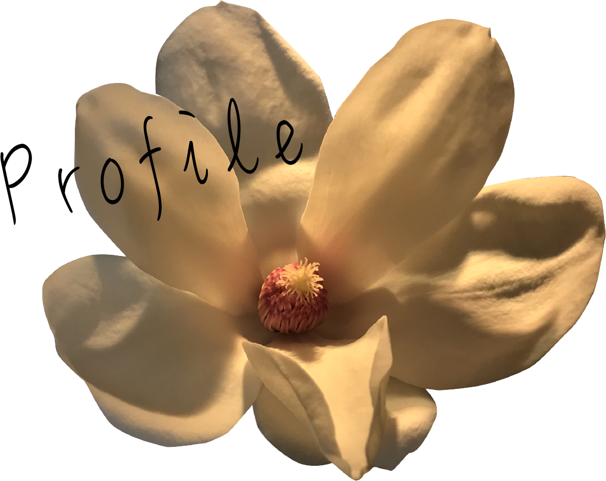

たなか あさひ
- 趣味
-
- 読書/人の心理観察
- 散歩:
自然を心より愛しています。
勉強の合間や思考を整理したい時は公園を歩いています。
- 1996年
- 佐賀県生まれ。
- 2016年
- ある日ふと入った花屋に興味を持ち、学校卒業後
Flower Designer としてキャリアをスタート
佐賀県内外九州を中心にブライダル装飾・空間装飾に従事。 - 2017年
- 更に幅広く技術を身に付けたいと考え
東京都内にてFlower Designer として従事。
ブライダルをはじめ大規模かつ大胆な装飾と
お客様に寄り添った提案を強みとする。 - 2021年
- 花屋で働く中で、最新のwebサービスを利用する機会があり、
その技術的内容に興味をもちweb業界へ飛び込む。
現在web制作会社にてWeb Designer として従事。 - 2021年
- 自身の更なる技術向上や興味関心への追求の為学習継続中。